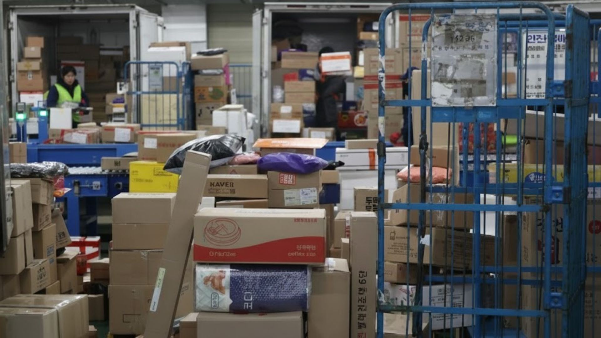

시설자금
생산설비 도입 · 공장 신축 및 매입 · 자동화 · 스마트공장 구축 등 기업의 생산 기반 확충에 필요한 장기 자금을 지원합니다.
- 금리연 2%대~정책자금 기준금리 ± 가산·우대 · 기업별 차등
- 기업당 한도최대 60억 원중진공 기준 · 비수도권 우대 등 별도
- 상환 기간최대 10년거치 기간 포함 · 자금별 상이
* 금리 · 한도는 기업별 심사 결과와 공고 기준에 따라 차등 적용됩니다.

설비 투자가 성장의 속도를 결정합니다
주문은 늘어나는데 설비가 따라가지 못하면 성장의 기회를 놓치게 됩니다. 하지만 설비 · 공장 투자는 규모가 크고 회수 기간이 길어 시중 대출만으로는 부담이 큽니다.
시설자금은 생산설비 도입, 공장 매입 · 신축, 자동화 설비 구축 등에 필요한 자금을 장기 · 저금리로 지원해 투자 부담을 분산시킵니다.
- 노후 설비 교체 · 생산라인 증설이 필요한 기업
- 공장 매입 · 신축 · 확장을 계획 중인 기업
- 자동화 · 스마트공장 구축을 준비하는 기업
- 사업장 이전 · 임차보증금이 필요한 기업
시설자금 컨설팅 효과
- 01생산성 향상
설비 현대화로 생산 능력과 품질 경쟁력을 높입니다.
- 02투자 부담 분산
장기 거치 · 분할 상환으로 초기 투자 부담을 줄입니다.
- 03입찰 · 수주 경쟁력
생산 기반을 갖춰 대형 거래처 · 입찰 대응력을 키웁니다.
시설자금 지원 세부사항
| 상담 대상 | 연매출 4억 이상 사업자 (세금 체납 · 대출 연체 없음, 대표자 신용점수 700점 이상) |
|---|---|
| 지원 대상 | 「중소기업기본법」상 중소기업 (제조업 · 지식서비스업 등 자금별 기준) |
| 지원 종류 | 중진공 시설자금(혁신성장 · 신성장기반 · 제조현장스마트화 등), 보증기관 시설 보증, 지자체 시설자금 |
| 융자 한도 | 기업당 최대 60억 원 이내 (중진공 기준, 지역 · 자금별 상이) |
| 금리 | 정책자금 기준금리 연동 (분기별 변동) · 가산 · 우대 금리 적용 |
| 융자 기간 | 최대 10년 이내 (거치 기간 포함, 자금별 상이) |
| 상환 방식 | 거치 기간 후 분할 상환 |
| 소요 기간 | 상담 및 서류 준비 후 통상 4 ~ 10주 (현장 실사 포함) |
| 상담 시 필요 서류 | 운전자금 기본 서류 + 설비 견적서 · 공장 매매(임대차) 계약서 · 사업계획서 등 |
※ 위 내용은 「2026년도 중소기업 정책자금 융자계획」 등 공고를 바탕으로 한 일반 안내입니다. 실제 한도 · 금리 · 기간은 운용기관과 자금별 세부 기준, 기업 심사 결과에 따라 달라집니다.
주요 운용 기관
- 중소벤처기업진흥공단
중소기업 정책자금 직접 · 대리대출을 운용하는 대표 기관입니다.
- 신용보증기금
담보력이 부족한 기업에 신용보증을 제공해 금융기관 대출을 돕습니다.
- 기술보증기금
기술력과 미래 성장성을 평가해 기술 기반 기업의 보증을 지원합니다.
- 지역신용보증재단
지역 중소기업의 보증부 대출과 지자체 협약 자금을 지원합니다.
- 지자체 중소기업육성자금
서울 · 경기 등 시 · 도별로 운전 · 시설 자금과 이자 지원을 운용합니다.
시설자금 확보 사례
연매출 4억 이상,
시설자금이 필요하다면
무료로 확인하세요
연매출 4억 이상 사업자라면 8가지 항목만 체크하세요. 지금 신청 가능한 정책자금과 예상 한도를 전문가가 직접 분석해 연락드립니다.
- 01연매출 4억 이상 사업자 대상 1:1 무료 상담
- 02매출 규모에 맞춘 자금 · 한도 설계
- 03접수 후 담당 전문가가 순차적으로 연락
개인정보 수집·이용 동의
- 수집 항목
- 성함, 연락처, 회사명, 지역, 업태, 사업 연혁, 연매출, 신용점수 구간, 연체·체납 여부, 필요 자금, 통화 가능 시간, 문의 내용
- 이용 목적
- 정책자금 상담 및 진단 결과 안내, 상담 이력 관리
- 보유 기간
- 상담 완료 후 1년 (관계 법령에 따라 보존이 필요한 경우 해당 기간)
동의를 거부할 수 있으며, 거부 시 상담 신청이 제한됩니다. 자세한 내용은 개인정보처리방침을 확인해 주세요.